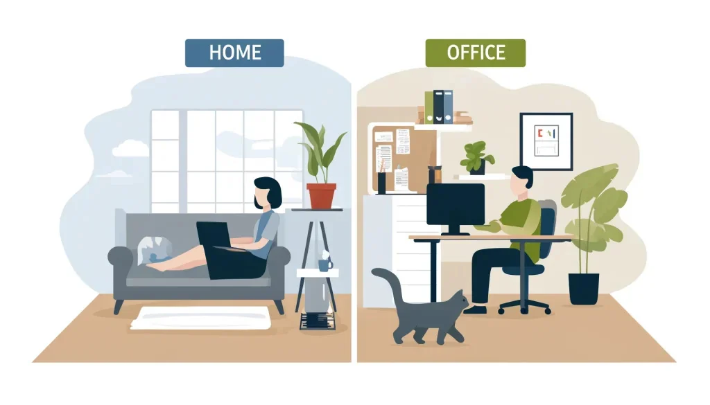

The hybrid work model has moved from a pandemic-era experiment to a permanent fixture of the modern workplace. According to a 2025 McKinsey report, over 58% of workers in developed economies now have the option to work remotely at least part of the time — and the majority prefer it. But preference and performance are two different things. Without the right structure, hybrid work can quietly erode your productivity, your visibility, and your career trajectory.
The professionals who truly thrive in hybrid environments are not the ones who simply enjoy the flexibility — they're the ones who are intentional about how they use it. This guide walks you through five proven strategies to help you perform at your best, stay connected with your team, and protect the boundaries that make flexible work sustainable long-term.
of employees say hybrid work improves their work-life balance — but only 39% say they feel equally visible for promotions compared to fully in-office colleagues. Structure and intentionality are what close that gap.
Strategy 1: Establish a Consistent Routine
STRATEGY 1 OF 5When your physical work environment changes day to day — sometimes home, sometimes office — a consistent routine becomes your anchor. Without it, the cognitive load of constantly re-orienting yourself creates a low-level mental fatigue that compounds over time and quietly chips away at your focus and output.
The most effective hybrid workers treat their routine as non-negotiable regardless of location. This means consistent start times, structured morning rituals, planned deep-work blocks, and predictable end times — whether you're at your home desk or in the office.
How to build a hybrid-proof routine:
- Set fixed start and end times — commit to them regardless of where you're working that day
- Block deep-work hours in your calendar — treat these as meetings you cannot cancel; protect them from interruptions whether remote or on-site
- Create location-specific rituals — a short walk before logging on at home, or a coffee ritual at the office, signals to your brain that work mode has begun
- Plan your office days strategically — use in-office time for collaboration, brainstorming, and relationship-building; use remote days for focused individual work
- Batch similar tasks by location — calls and meetings on office days, writing and deep analysis on home days, for example
Strategy 2: Optimise Your Home Office
STRATEGY 2 OF 5Your home workspace directly affects your output, your energy levels, and your long-term physical health. A makeshift setup at the kitchen table might work for a day or two — but for professionals spending multiple days per week working remotely, the quality of your home environment has a measurable impact on performance.
You don't need an elaborate or expensive setup. You need a workspace that is dedicated, ergonomic, and psychologically separated from your living space — because the physical distinction between "work space" and "home space" is what makes switching off genuinely possible.
Essential home office investments:
- Ergonomic chair — the single most important investment; poor posture over months leads to back and neck problems that affect focus and wellbeing
- External monitor — working from a laptop screen alone reduces productivity significantly; a second screen dramatically improves workflow
- Quality webcam and microphone — in a hybrid world, how you show up on video calls affects your professional presence and perceived engagement
- Reliable, fast internet — a wired Ethernet connection is always more stable than Wi-Fi for video calls and large file transfers
- Good lighting — natural light is best; if unavailable, a ring light or desk lamp positioned in front of you (not behind) prevents the shadowed, unprofessional look on video
- Noise management — noise-cancelling headphones are worth every penny if you share your home with others during working hours
Strategy 3: Over-Communicate with Your Team
STRATEGY 3 OF 5Communication is the single biggest friction point in hybrid teams. When some people are in the office and others are remote, information flows unevenly. Side conversations happen in person that remote colleagues miss. Context gets lost. People feel disconnected. Over time, this creates two tiers within the same team — the "in" group and the "out" group — with real consequences for collaboration and morale.
The solution is deliberate, structured over-communication. This doesn't mean more meetings — in fact, poorly run meetings are one of the biggest productivity drains in hybrid work. It means being more explicit, more consistent, and more visible in how you communicate.
Hybrid communication best practices:
- Share your schedule publicly — use your calendar or a team channel to let colleagues know when you're remote, when you're in-office, and when you're heads-down unavailable
- Default to async first — before scheduling a meeting, ask whether the outcome could be achieved with a well-written message, a shared document, or a Loom video
- Write things down — decisions made verbally in the office must be documented and shared with the full team; this protects remote colleagues and creates an institutional record
- Use the right tool for the right message — urgent and time-sensitive: direct message or call; project updates: project management tool; announcements: team channel; sensitive feedback: video call
- Make video calls inclusive — if any participant is remote, everyone should join from their own device rather than having a group in a room and one person on a screen
| Communication Type | Best Tool | When to Use |
|---|---|---|
| Urgent / time-sensitive | Phone call or direct message | Needs response within the hour |
| Project updates | Asana, Monday, Notion | Daily / ongoing task tracking |
| Team announcements | Slack / Teams channel | Information everyone needs |
| Complex discussions | Video call + written summary | Decisions requiring input |
| Async explanations | Loom video | Walkthroughs, demos, feedback |
| Sensitive conversations | Private video call | Feedback, performance, personal |
Strategy 4: Set Clear Boundaries
STRATEGY 4 OF 5One of the most seductive and dangerous aspects of hybrid work is that it can feel like you're always at work. The laptop is always there. The Slack notifications don't stop. A quick email check at 9pm becomes the norm. Over months, this constant low-level availability erodes the recovery time your brain needs to perform at a high level — and leads directly to burnout.
Setting boundaries in hybrid work is not about working less. It's about protecting the conditions that allow you to work well. The most productive hybrid professionals are disciplined about their off-time precisely because it makes their on-time significantly more effective.
How to set effective hybrid work boundaries:
- Set a hard stop time and honour it — close your laptop, put your phone face-down, and physically leave your workspace at the same time each day
- Turn off work notifications after hours — on both your laptop and phone; use scheduled delivery settings in Slack and email so messages wait until morning
- Communicate your availability clearly — let your team know your working hours upfront so expectations are managed before a problem arises
- Create a shutdown ritual — a brief end-of-day routine (reviewing tomorrow's priorities, closing tabs, making a quick to-do list) signals to your brain that the workday is genuinely over
- Protect your lunch break — stepping away from your desk for even 20 minutes at midday measurably improves afternoon focus and reduces decision fatigue
Strategy 5: Stay Flexible and Visible
STRATEGY 5 OF 5The hybrid work model is still evolving. Policies change. Team dynamics shift. New tools emerge. The professionals who navigate this most successfully are those who approach change with curiosity rather than resistance — and who actively manage their visibility rather than assuming good work will speak for itself.
Visibility in a hybrid world doesn't mean being the loudest person in the room or spending more time in the office than you need to. It means being reliably present, consistently contributing, and strategically ensuring that the right people are aware of your impact.
How to stay visible and adaptable in hybrid work:
- Volunteer for high-visibility projects — cross-functional initiatives, presentations to leadership, or mentoring programmes all increase your profile regardless of where you're physically working
- Share your wins proactively — send a brief weekly update to your manager summarising what you've accomplished and what you're working on next; don't wait to be asked
- Use in-office days for relationship-building — schedule one-on-ones, have lunch with colleagues, and attend team socials when you're on-site; these informal connections carry enormous career value
- Stay open to policy changes — hybrid arrangements are subject to company decisions; employees who demonstrate flexibility and professionalism when policies shift earn trust and goodwill that pays off long-term
- Continuously evaluate what's working — every quarter, honestly assess whether your current hybrid setup is serving your productivity, your career growth, and your wellbeing. Adjust accordingly.

Protecting Your Career Growth in a Hybrid World
One of the most underappreciated risks of hybrid work is the impact on career progression. Studies consistently show that remote and hybrid workers are at risk of being overlooked for promotions, leadership opportunities, and high-profile assignments — not because of performance, but because of reduced visibility. This is known as proximity bias, and it's one of the most significant structural challenges in modern hybrid workplaces.
Protecting your career trajectory in a hybrid environment requires the same intentionality you bring to your daily productivity. It means being strategic about when you're in the office, how you communicate your value, and how you cultivate relationships with decision-makers.
Career protection strategies for hybrid workers:
- Schedule regular one-on-ones with your manager — don't let these slip when you're remote
- Make your career goals explicit; don't assume they're known
- Build relationships with senior leaders through project involvement, not just proximity
- Document your accomplishments consistently and share them during performance conversations
- Seek out a mentor or sponsor who can advocate for you regardless of your physical location
Your Hybrid Work Success Checklist
- Established consistent start and end times for workdays regardless of location
- Created a dedicated, ergonomic home workspace
- Shared your weekly schedule with your team so availability is transparent
- Identified which tasks are best done remotely vs. in-office
- Set up notification boundaries after working hours
- Scheduled regular one-on-ones with your manager
- Proactively shared accomplishments with your manager in the past month
- Used at least one in-office day this month for deliberate relationship-building
- Completed a quarterly review of whether your hybrid setup is working
- Identified one area of your hybrid routine to improve in the next 30 days
Frequently Asked Questions About Hybrid Work
What is a hybrid work environment?
A hybrid work environment is a flexible model where employees split their time between working remotely and working in a physical office. The split varies widely — some employers offer full flexibility while others require set in-office days per week. The key distinction from fully remote work is the regular expectation of some in-person presence.
How do you stay productive in a hybrid work model?
Productivity in hybrid work depends on structure and intentionality. Establish consistent routines, create a dedicated home workspace, plan your week so the right tasks happen in the right locations, and use collaboration tools to stay connected with your team regardless of where you're working on a given day.
What are the biggest challenges of hybrid work?
The most common challenges are maintaining consistent communication across in-office and remote team members, avoiding proximity bias in career progression, protecting work-life balance when working from home, and staying visible to decision-makers. All of these are manageable with deliberate strategy — which is exactly what this guide addresses.
How do you maintain work-life balance in a hybrid environment?
Set fixed working hours and honour them consistently. Create a physical shutdown ritual at the end of each day, turn off work notifications after hours, and protect your lunch break. The goal is to be fully present at work during work hours — and fully present at home during home hours.
How do I avoid being overlooked for promotions as a hybrid worker?
Be deliberate about visibility. Share your accomplishments proactively with your manager, use in-office days for relationship-building and high-visibility moments, volunteer for cross-functional projects, and schedule regular career conversations with your manager. Don't assume great work will be noticed automatically — make it visible.
Ready to Find a Role That Offers Real Flexibility?
At Talent Loop, we work with companies that offer genuine hybrid and remote flexibility — not just policies on paper. Our career consultants can match you with roles that fit both your professional goals and your preferred way of working.
Take Our Free Career Assessment